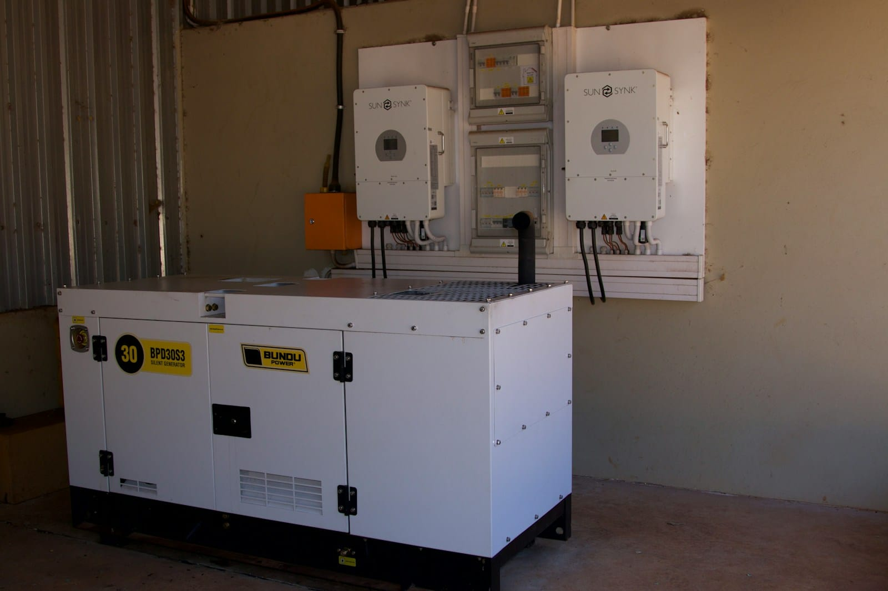

Professional or DIY Smart Home? Choosing the Right Approach
DIY is great for a single device. Here is when a professionally designed system is the better choice.
RTI service & maintenance
Remote stopped responding? New cable box the system cannot control? Original installer no longer around? As an authorized RTI dealer and programmer, we service, reprogram and upgrade existing RTI systems, including ones we did not install.
There are many RTI systems in Bahamian homes, and a good number of them have drifted out of step with the house. A television was replaced, the TV provider swapped the cable boxes, a streaming device was added, the Wi-Fi was changed, or a storm took out a component. The RTI remote still lights up, but Watch TV no longer does what it should. Because RTI systems are programmed with dealer-only software, an electrician or a general IT company cannot put that right.
Island Integration is an authorized RTI dealer, installer and programmer in Nassau. We diagnose and repair RTI systems, update the programming for new equipment, replace failed remotes and processors with current models, and take over the care of systems whose original installer is unavailable.
How we work
We visit, list the RTI hardware and the equipment it controls, and test each activity to see exactly what fails and why.
If you or the previous installer have the RTI system file, we work from it. If it is not available, the program generally cannot be copied back out of the processor, so we rebuild it, which is also a chance to tidy the layout.
We fix or replace faulty parts, update the program for your current equipment, and test every remote and touchpanel.
Your program is stored safely with us and a copy is yours on request, so future changes are quick and you are never locked out of your own system.
Designed for the islands
Yes. We service RTI systems regardless of who installed them. The first visit is an assessment so we know what hardware and programming you have.
Yes. If the original file cannot be obtained we rebuild the program for your current equipment. It takes longer than editing an existing file, and the result is a system that is documented and supportable again.
Usually not. In most cases the existing remote and processor are fine and only the programming needs updating. Read RTI remote not working? What to check first.
It depends on the age of the processor and remotes. Often a reprogram and one or two replacement parts give years more service. Where hardware is discontinued, we quote an upgrade that reuses your wiring, speakers and displays.
Yes. We travel from Nassau and can often prepare the programming in advance so time on site is short.
Related services
DIY is great for a single device. Here is when a professionally designed system is the better choice.

What a UPS can and can’t do, which devices to protect first, and how generators fit into the picture.
Coastal air is hard on electronics. Placement, ventilation, rated equipment and routine checks make a real difference.
Tell us about your property and goals, and we’ll recommend the right approach.